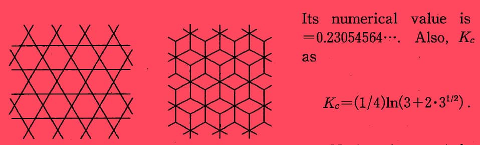

Critical Compressibility Factor of Two-Dimensional Lattice Gas - Kagome and Diced Lattices-
Ryuzo Abe, Tomonari Dotera and Takeshi Ogawaa
Prog. Theor. Phys. 84 (1990), pp.425-435
The critical compressibility factor Zc at the gas-liquid critical point is defined by Zc=pcVc/NkBTc (pc: critical pressure, Vc: critical volume, Tc: critical temperature, kB: Boltzmann's constant, N: number of molecules). The Zc of the lattice gas on the Kagome or diced lattice is discussed. First, on the basis of exact solution for the partition function Z of the Ising model without magnetic field on these lattices, the Zc is calculated exactly. The results are Zc=0.08330842... (Kagome lattice) and Zc=0.14284554... (diced lattice). Secondly, high temperature expansion for Zc is studied and the expansion is carried out up to w13 for the Kagome lattice and up to w12 for the diced lattice. Extrapolation procedures for obtaining Zc are discussed. A similarity between the diced and Penrose lattices and the one between the Kagome and dual Penrose lattices are pointed out.